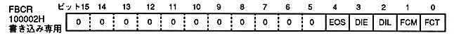

VBE | FCM | FCT | Switch mode | Switch time | |||||||||||||||||||||||||||
0 | 0 | 0 | changes every 1/60 seconds | ||||||||||||||||||||||||||||
0 | 0 | 1 | − | ||||||||||||||||||||||||||||
0 | 1 | 0 | Erase next field | ||||||||||||||||||||||||||||
0 | 1 | 1 | Change in next field | ||||||||||||||||||||||||||||
1 | 0 | 0 | − | ||||||||||||||||||||||||||||
1 | 0 | 1 | − | ||||||||||||||||||||||||||||
1 | 1 | 0 | − | ||||||||||||||||||||||||||||
1 | 1 | 1 | Erase with V blank, |
DIE | DIL | Race mode | Draw after next frame change |
0 | 0 | Non-interlaced / | All line drawing |
0 | 1 | Setting prohibited | − |
1 | 0 | Double dense interlace | Draw only even (EVEN) lines. |
1 | 1 | Double dense interlace | Draw only odd (ODD) lines |
EOS | Even / odd coordinate selection bit | |
0 | sample even pixels only | |
1 | Only the pixels with odd coordinates are sampled. |